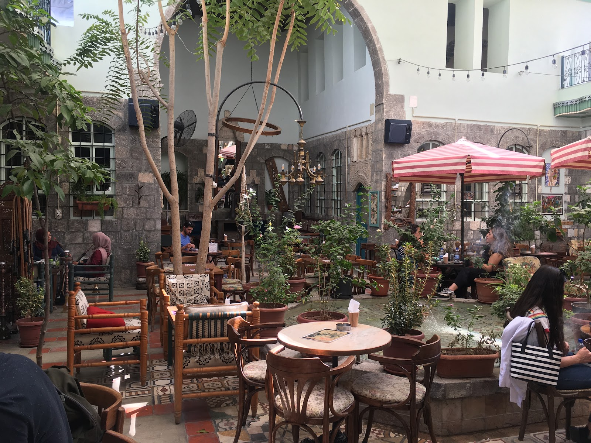
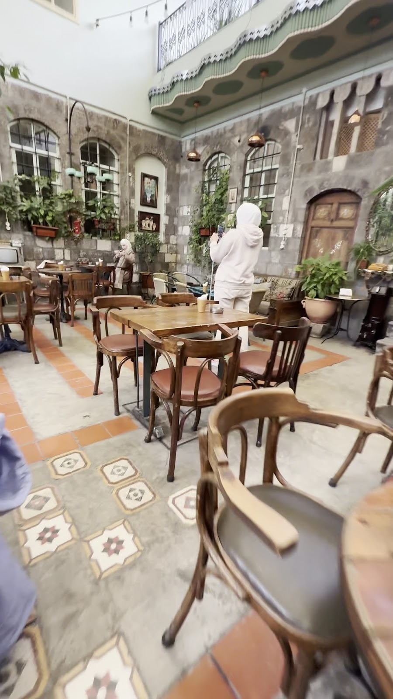
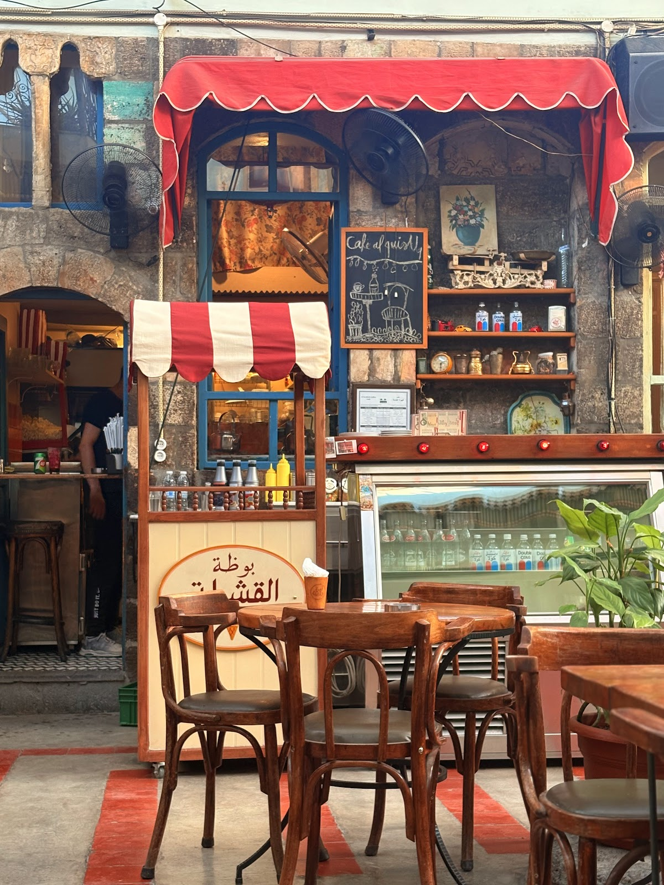
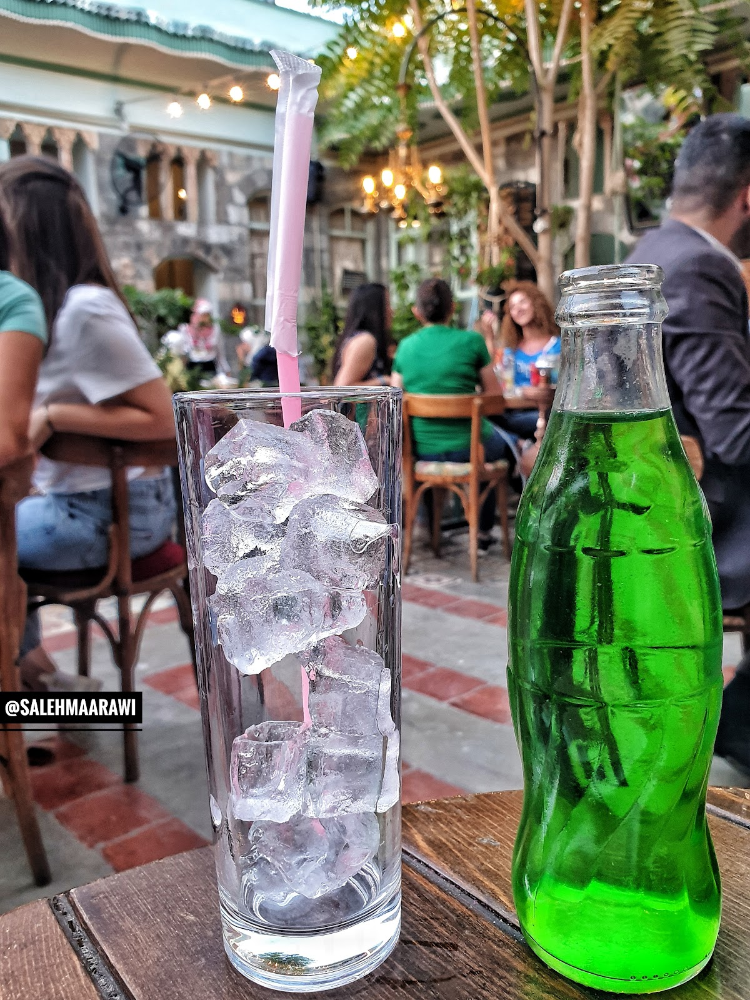
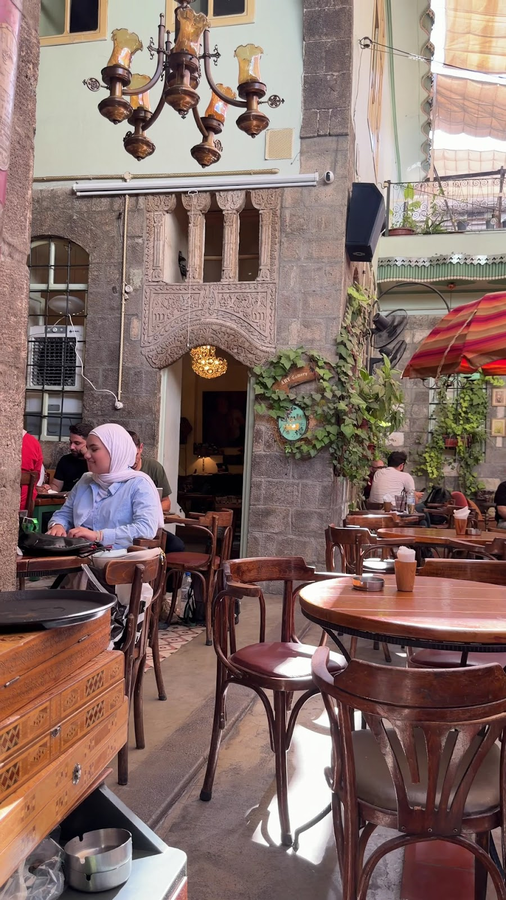
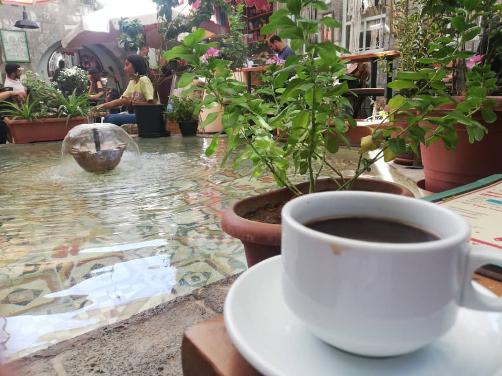
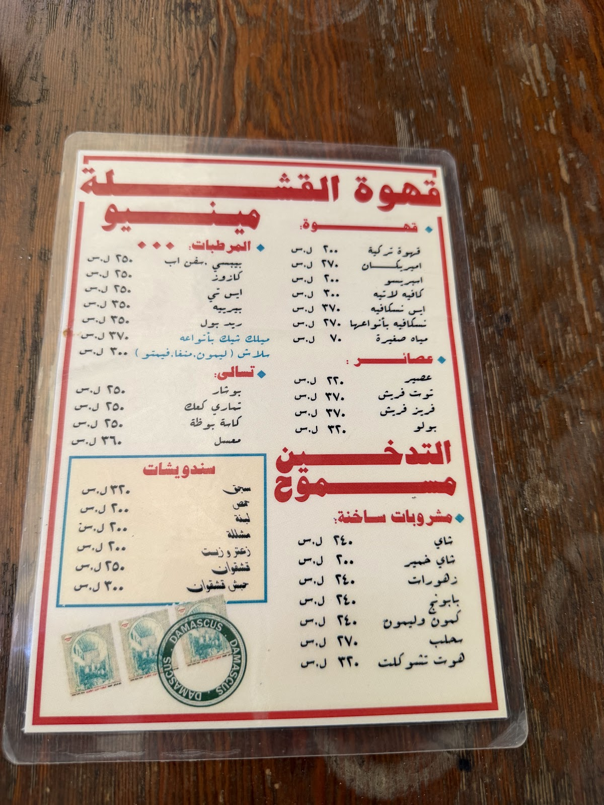

بيت شامي قديم فتح صدره للناس: بحرة وياسمين وقناطر، وقهوة تركية بتوصل على صينية نحاس.An old Damascene house opened to everyone — a courtyard fountain, jasmine and arches, and Turkish coffee arriving on a brass tray.

في حي الأمين، خلف باب خشبي عادي، بيت دمشقي مرمّم بمحبة: باحة سماوية حول البحرة، شمسيات وخضرة، وغرف بقناطرها وحجرها مثل ما كانت من مئات السنين. رتّبنا البيت ولا غيّرنا روحه — هيك صارت القشلة مقصد شباب الشام.In the Al-Amin quarter, behind an ordinary wooden door, stands a lovingly restored Damascene house: an open courtyard around the fountain, umbrellas and greenery, rooms keeping their arches and stone as they have for centuries. We arranged the house without changing its soul — and that is how Al Qishla became young Damascus' favourite.
القعدة بسيطة عن قصد: قهوة وأركيلة وسندويشات، وصوت المي بالبحرة. أكثر من ١٤٥ ألف متابع على إنستغرام بيشاركوا صور البيت كل يوم — بس الصورة الحقيقية بتبلّش من أول ما تدخلوا من الباب.The sitting is simple on purpose: coffee, shisha, sandwiches, and the sound of water in the fountain. More than 145,000 followers share the house on Instagram every day — but the real picture starts the moment you step through the door.

فنجان تركية جنب مي البحرة والورد — القعدة اللي بتتصوّر ألف مرة باليوم.Turkish coffee beside the fountain and the flowers — the seat photographed a thousand times a day.

تحت الظلّة المقلّمة بينحضّر كل شي على مهل — تركية وسادة ولاتيه وسحلب.Under the striped awning everything is brewed without hurry — Turkish, espresso, latte and sahlab.

البيت بيسهر لبعد منتصف الليل — سلاش بارد بالصيف وسحلب سخن بالشتي.The house stays up past midnight — cold slush in summer, hot sahlab in winter.



"If you're visiting Damascus, Al Qishla Café is a place you simply shouldn't miss. Set inside a beautifully restored traditional Damascene house, it perfectly captures the charm, history, and elegance of old Damascus."
"One of the most charming places in the old city of Damascus — very authentic, renovated and decorated to present the humble, hipster-like young Damascene culture in a sophisticated historical traditional house."
"One of those special places that you leave, but it never leaves you. A simple cafe that serves drinks, hookah and sandwiches. It screams Damascus so quietly. Love it."
★ 4.4 / 5 — 178 تقييم على غوغلGoogle reviews
| يومياًDaily | 12:00 — 1:30 بعد منتصف الليلafter midnight |
من الظهر حتى ما بعد منتصف الليل، كل أيام الأسبوع.From noon till past midnight, every day of the week.
حي الأمين — دمشق القديمة
+963 933 810 240
احجزوا عالواتسابBook on WhatsApp اتصلوا فيناCall us افتحوا الخريطةOpen in Maps إنستغرامInstagram